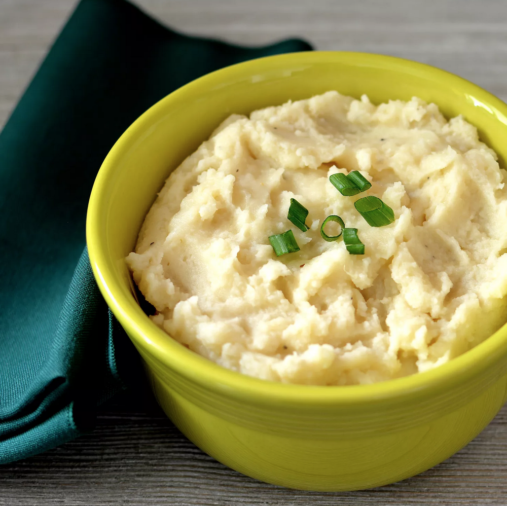

Make-Ahead mashed potatoes

These make-ahead mashed potatoes can be made several days ahead and stored in the fridge.
Ingredients
- 5 pounds Yukon Gold potatoes, cubed
- 8 ounces sour cream
- 2 (3 ounce) package cream cheese
- 1/2 cup milk
- 2 teaspoons onion salt
- ground black pepper to taste
Directions
- Place potatoes in a large pot of lightly salted water. Bring to a boil and cook until tender, about 15 minutes; drain.
- Transfer potatoes into a large bowl and mash. Stir in sour cream, cream cheese, milk, onion salt, and pepper until well combined. Transfer into a large casserole dish.
- Let potatoes cool completely, 15 to 20 minutes. Cover with aluminum foil and refrigerate for up to 2 days.
- When ready to bake, remove casserole from the refrigerator and let sit for 30 minutes on the counter. Preheat the oven to 325 degrees F (165 degrees C).
- Bake, covered, in the preheated oven for 50 minutes.
Tips
If you plan on serving these right away, preheat the oven to 325 degrees F (165 degrees C) before you start cooking the potatoes in Step 1. Then follow Steps 1, 2, and 5.